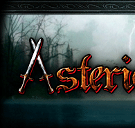
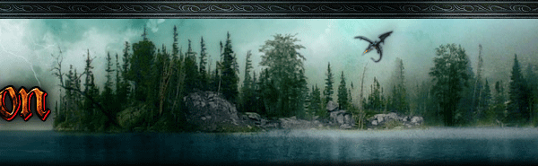
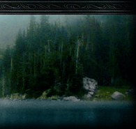

Příroda Asterionu
Velký asterionský herbář
Rozsáhlá obrazová knihovna asterionských rostlin a jejich popisů. Obsah právě třídíme a připravujeme pro webové procházení.
- ilustrace
- popisy rostlin
- tematické hledání



Vyberte si cestu
Pravidla, bytosti a přírodní bohatství světa na jednom místě. Jednotlivé knihovny můžete používat samostatně; společný rozcestník je bude postupně propojovat.
Pravidla a bestiáře
Vyhledávejte bytosti, čtěte celé aplikace modulů a porovnávejte jejich podobu v různých herních systémech.
Příroda Asterionu
Rozsáhlá obrazová knihovna asterionských rostlin a jejich popisů. Obsah právě třídíme a připravujeme pro webové procházení.